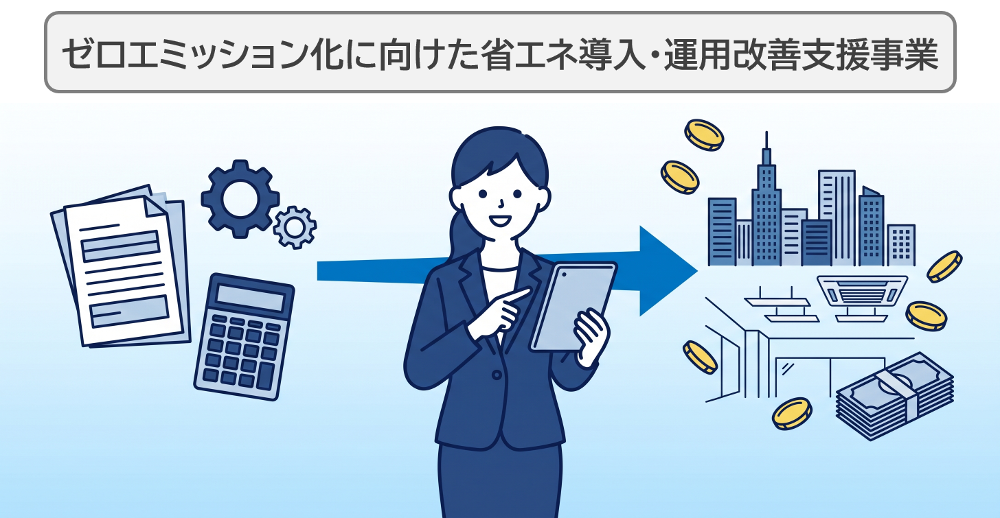
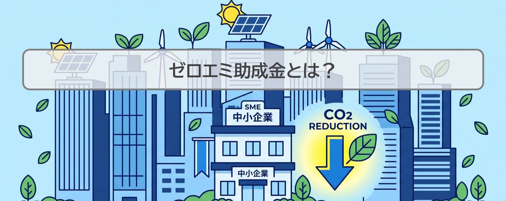
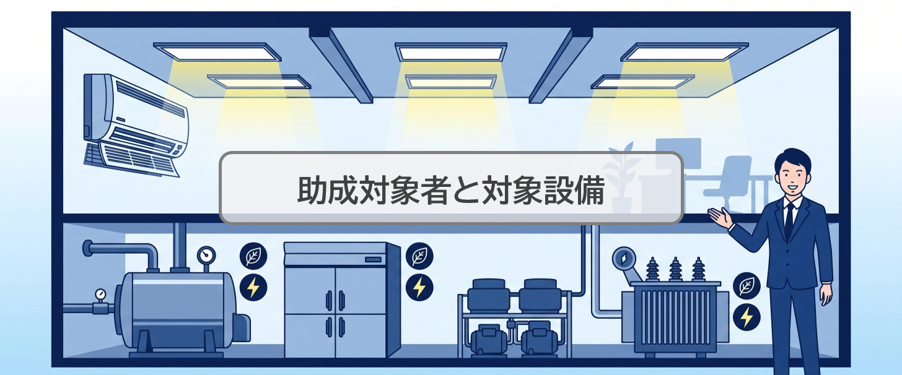
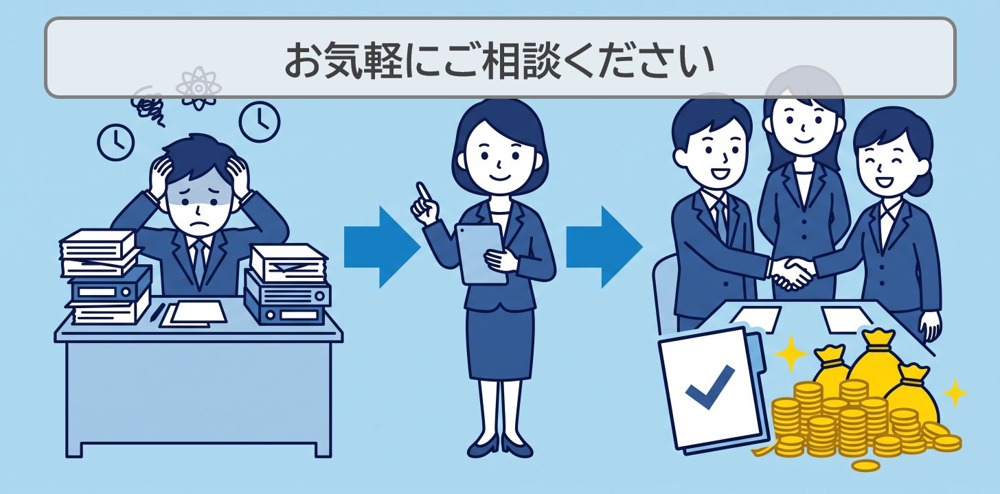

ナレッジ
ナレッジ記事
【受付中】東京都ゼロエミ補助金申請完全ガイド｜次回は9月16日受付開始

東京都のゼロエミ補助金（正式名称：ゼロエミッション化に向けた省エネ設備導入・運用改善支援事業）は、2026年度（令和8年度）も申請を受付中です。今年度から受付回数が年5回から6回に拡大され、次回の第4回申請は2026年9月16日（水）〜10月2日（金）に受け付けられます。
LED照明や高効率空調設備などの省エネ設備導入に対して、最大4,500万円・助成率3/4という手厚い支援が受けられる制度です。一方で、申請には省エネ診断の受診（または省エネ計画の作成）や複数の書類準備が必要なため、「手続きが分からない」「次の回に間に合うか不安」という声も多く聞かれます。
この記事では、2026年度の申請スケジュール・対象設備・助成額・申請要件と、第4回・第5回に間に合わせるための逆算スケジュールを、東京都・クール・ネット東京の公開情報に基づいて解説します。
- 東京都ゼロエミ補助金は2026年度も受付中。次回・第4回は9月16日（水）〜10月2日（金）
- 助成率は最大3/4・上限4,500万円。LED照明や業務用空調などの省エネ設備が対象
- 先着順ではなく予算超過時は抽選。準備は受付開始の1〜2か月前からが確実
「申請代行」ではなく申請サポート／お手伝いとして対応します。しつこい営業電話はいたしません。
東京都ゼロエミ補助金（助成金）とは

東京都ゼロエミ補助金は、都内の中小規模事業所における省エネルギー化を推進するための助成制度で、クール・ネット東京（東京都地球温暖化防止活動推進センター）が受付・審査を行っています。
都内の温室効果ガス排出量の大部分を占めるCO2のうち、業務・産業部門が排出量全体の半分近くを占めており、その約6割が都内に約63万ある中小規模事業所からの排出とされています。「2050年CO2排出実質ゼロ」を掲げる「ゼロエミッション東京」の実現に向けて、中小規模事業所の省エネ設備導入・運用改善を支援するのが本事業です。
令和7年度で一区切りを迎えた本事業は、2026年度（令和8年度）も継続して実施されることが東京都から発表されています。今年度の予算規模は約104億円（東京都報道発表による）と、前年度の86.7億円から拡大しています。
2026年度の申請期間｜年6回に拡大・次回は9月16日から
2026年度（令和8年度）の交付申請受付は年6回です。第1回〜第3回は受付を終了しており、今から申請できるのは第4回・第5回・第6回の3回です。
| 申請回 | 交付申請受付期間 | 状態 | 工事完了届の提出期限 |
|---|---|---|---|
| 第1回 | 2026年4月21日（火）〜5月8日（金） | 受付終了 | 2027年9月30日 |
| 第2回 | 2026年6月15日（月）〜6月26日（金） | 受付終了 | 2027年9月30日 |
| 第3回 | 2026年7月31日（金）〜8月14日（金） | 受付終了 | 2027年10月29日 |
| 第4回 | 2026年9月16日（水）〜10月2日（金） | 受付前（次回） | 2027年10月29日 |
| 第5回 | 2026年11月9日（月）〜11月20日（金） | 受付前 | 2027年11月30日 |
| 第6回 | 2027年1月18日（月）〜1月29日（金） | 受付前 | 2027年11月30日 |
各回の交付申請において予算を超過した場合は、受付期間中に申請のあった全件を対象に抽選が行われます（先着順ではありません）。抽選となる可能性がある以上、交付決定を確約できる制度ではない点にご注意ください。
助成対象者と対象設備

助成対象者
- 中小企業等（中小企業、学校法人、公益財団法人、医療法人、社会福祉法人等）
- 上記と共同で事業を実施するリース事業者またはESCO事業者
対象となるのは都内の中小規模事業所です。家庭（個人住宅）への設備導入は本助成金の対象外です（家庭向けには東京都の別制度があります）。
助成対象設備
①省エネ設備の導入
- 高効率空調設備
- 全熱交換器
- LED照明設備
- 高効率ボイラー
- 高効率変圧器
- 断熱窓
- 高効率コンプレッサ
- 高効率冷凍冷蔵設備
- その他の省エネ設備
②運用改善の実践
- 人感センサー等の導入
- 照明スイッチ細分化工事
- その他の運用改善
助成額と助成率
| 申請区分 | 助成率 | 助成上限額 |
|---|---|---|
| 年間CO2排出量を更新前と比較して28t-CO2以上削減可能な省エネ設備の導入又は運用改善の実践を行う | 3/4 | 4,500万円 |
| 事前に省エネコンサルティングまたは省エネ診断を受診し、その提案に基づき、年間CO2排出量を更新前と比較して3t-CO2又は30%以上削減可能な省エネ設備の導入又は運用改善の実践を行う | 2/3 | 2,500万円 |
| 助成対象事業者が自ら計画を作成し、年間CO2排出量を更新前と比較して3t-CO2又は30%以上削減可能な省エネ設備の導入又は運用改善の実践を行う | 2/3 | 1,000万円 |
助成対象経費
- 設計費
- 設備費
- 工事費
主な助成要件
中小企業等が都内で所有または使用する中小規模事業所において、以下のいずれかを行うことが必要です。
要件（1）省エネ診断に基づく申請
事前に省エネ診断を受診し、その提案に基づいて省エネ設備の導入または運用改善の実践を行うこと。クール・ネット東京が実施する以下のいずれかの事業であることが必要です。
- 省エネコンサルティング事業（地球温暖化対策ビジネス事業者が行う無料の省エネルギー診断）
- 事業所の省エネ診断
要件（2）自ら計画を作成
事業者が自ら計画を作成し、省エネ効果の確認ができる省エネ設備の導入または運用改善の実践を行うこと。
共通要件
上記を実施する事業所について、地球温暖化対策報告書を提出すること。
申請に必要な準備書類
交付申請は原則として電子申請です。電子フォームから以下の必要書類を添付して申請します。
- 交付申請書
- 省エネ計算シート（CO2削減効果の確認シートを含む）
- 省エネ診断書類（要件（1）の場合）
- 見積書
- 設備仕様書
- その他申請に必要な書類
※申請フォームに入力した交付申請額や申請区分は、交付申請後に変更できません。申請内容に誤りがないよう十分ご確認ください。
※各回で一つの事業者が申請できるのは一つの事業所のみです。
申請から助成金給付までの流れ
- 交付申請（各回の受付期間内に電子申請）
- 審査・抽選（予算超過の場合は抽選）
- 交付決定通知
- 工事着工・実施
- 工事完了
- 工事完了届の提出（工事完了日から30日以内）
- 完了検査
- 助成金の交付
交付決定前に発注・着工した工事は対象外となるのが補助金の原則です。必ず交付決定を待ってから工事に着手してください。
第4回・第5回に間に合わせる逆算スケジュール
「次の回に間に合うか」は、事前準備をいつ始めるかで決まります。第4回（9月16日〜10月2日）を目指す場合の目安は以下の通りです。
| 時期 | やること |
|---|---|
| 8月中〜9月上旬 | 現地調査・導入設備の選定・見積取得。省エネ診断を使う場合は診断の申込・受診（要件（1））、自社で進める場合は省エネ計画の作成（要件（2）） |
| 9月上旬〜中旬 | 省エネ計算シートの作成・CO2削減効果の確認・申請書類一式の準備 |
| 9月16日〜10月2日 | 電子申請（申請区分・申請額は提出後に変更不可のため最終確認を入念に） |
省エネ診断の受診枠や書類準備の期間を考えると、第4回はこれから準備を始める場合ややタイトです。間に合わない場合でも、第5回（11月9日〜11月20日）・第6回（2027年1月18日〜1月29日）と年度内にあと2回の機会があります。いずれの回も、受付開始の1〜2か月前から準備を始めるのが確実です。
重要な注意事項
助成対象事業の要件
省エネ設備の導入または運用改善の実践を通じて、年間CO2排出量が一定量・率以上（3t-CO2または30%以上）削減可能な場合に助成金交付の対象となります。
自己負担について
本事業は対象経費の2/3以内（または3/4以内）を助成するものであり、残りの金額は自己負担となります。助成額をキャッシュバック等に利用する行為は不正・虚偽にあたるため、絶対に行わないでください。
よくある質問（FAQ）
Q1. 2026年度の申請はいつまで受け付けていますか？
A. 次回の第4回が2026年9月16日〜10月2日、その後、第5回が11月9日〜11月20日、第6回（最終）が2027年1月18日〜1月29日に予定されています。年度内に残り3回の申請機会があります。
Q2. 申請は先着順ですか？
A. 先着順ではありません。各回で予算を超過した場合は、受付期間中に申請のあった全件を対象に抽選が行われます。そのため、申請すれば必ず交付されるという制度ではありません。
Q3. 家庭用エアコンの買い替えにも使えますか？
A. 本助成金は都内の中小規模事業所（中小企業・学校法人・医療法人等）が対象で、家庭への設備導入は対象外です。家庭向けには東京都の別の支援制度があるため、そちらをご確認ください。
Q4. 省エネ診断は必ず受ける必要がありますか？
A. 必須ではありません。省エネ診断に基づく申請（助成率2/3・上限2,500万円）のほか、事業者が自ら計画を作成する区分（助成率2/3・上限1,000万円）でも申請できます。また、28t-CO2以上の削減が見込める場合は助成率3/4・上限4,500万円の区分が適用されます。
Q5. 今から準備して第4回（9月16日〜）に間に合いますか？
A. 設備の選定や見積が進んでいれば間に合う可能性がありますが、省エネ診断の受診から始める場合はタイトです。間に合わない場合は第5回（11月）・第6回（2027年1月）を目標に、余裕を持って準備することをおすすめします。
お気軽にご相談ください

当社がゼロエミ補助金の申請をサポートします
当社では、施工計画の策定から補助金・助成金申請のサポートまで、貴社の状況に合わせた支援を行っています。
第4回・第5回での申請をご検討中の企業様は、お早めにご相談ください。
施工計画から策定するトータルサポート
- 現地調査・省エネ診断のサポート
- 最適な省エネ設備のご提案
- CO2削減効果の試算
- 施工計画の策定
- 助成金・補助金申請書類の作成のサポート
申請サポートのみのご依頼
- 申請書類や必要情報の整理やコンサルティング
- 省エネ計算書の作成サポート
- CO2削減効果のシミュレーション
- 申請内容の精査・チェック
- 申請手続きのフォロー
「申請代行」ではなく申請サポート／お手伝いとして対応します。営業電話はいたしません。
関連情報
- 業務用エアコンの入れ替えに使える補助金はこちら（/subsidy-air-conditioner/ へリンク）
- LED照明工事と補助金活用はこちら（/led-construction/ へリンク）
- 省エネ・補助金申請サポートの詳細はこちら（/subsidy/ へリンク）
免責事項：本記事は2026年8月15日時点の公開情報に基づいて作成しています。助成金額・助成率・対象・スケジュールは年度・制度改正により変わるため、申請の際は必ず最新の募集要項・実施要綱をご確認ください。本記事の記載内容は交付決定・助成額を保証するものではありません。
参考リンク：
- クール・ネット東京 ゼロエミッション化に向けた省エネ設備導入・運用改善支援事業：https://www.tokyo-co2down.jp/subsidy/zeroemi-shoene/
- 東京都 報道発表（2026年3月27日）：https://www.metro.tokyo.lg.jp/information/press/2026/03/2026032709
- 東京都産業労働局 中小規模事業所における省エネルギー対策：https://www.sangyo-rodo.metro.tokyo.lg.jp/energy/menu/saving_main/support_for_equipment_introduction_and_operational_improvement